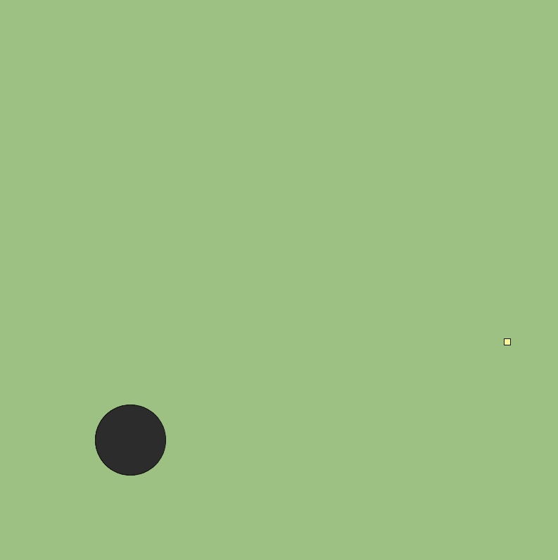
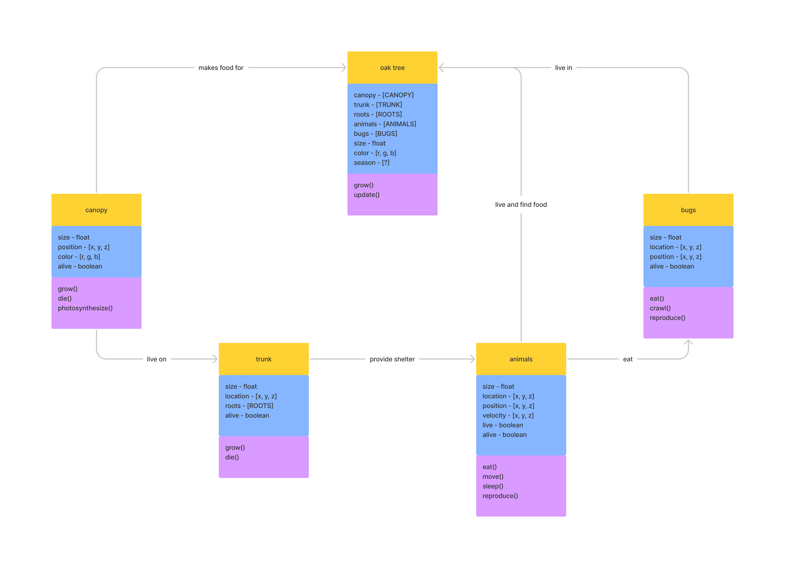
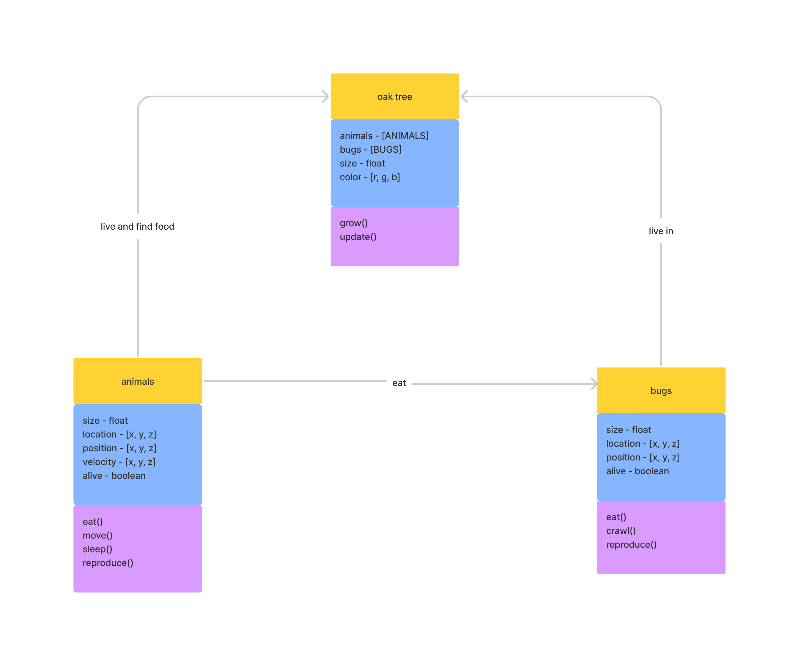
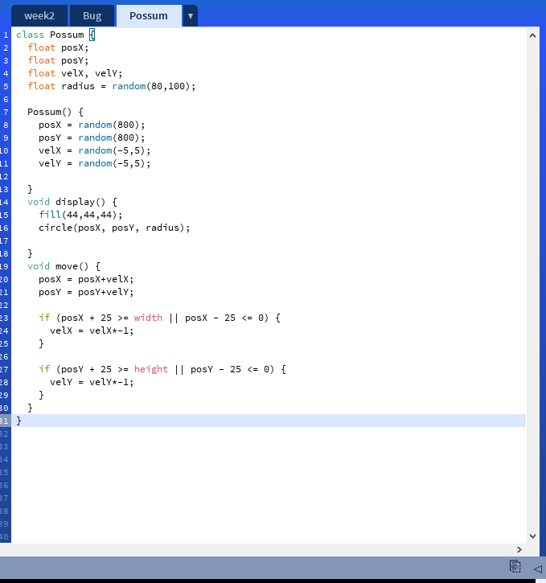
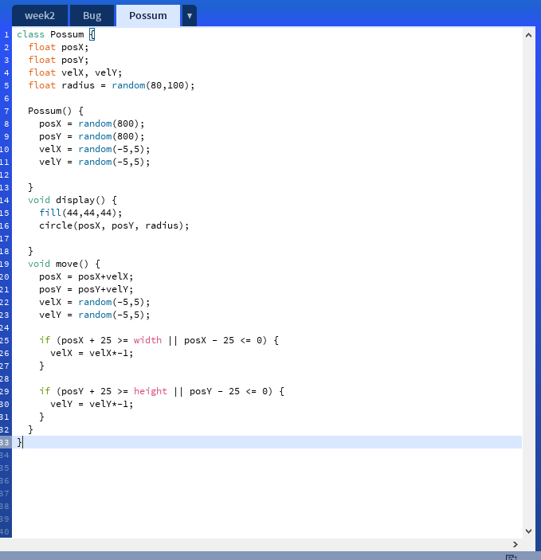

Reactions to excerpts Stephanie Houde and Charles Hill's What Do Prototypes Prototype
The goal of this chapter is to establish a model that describes any prototype in terms of the artifact being designed, rather than the prototype’s incidental attributes. By focusing on the purpose of the prototype — that is, on what it prototypes —we can make better decisions about the kinds of prototypes to build.
I completely agree that this is how prototypes are to be created - with specific goals in mind. However, I've actually never seen the contrary. Maybe in a lower level IXD course, I may have seen a novice designer try to prototype an entire experience. But, and this could just be a product of my education, I've always known prototypes to be incredibly contextual. Is this different elsewhere? Is an implicit message to prototype more often? Do the varying perspectives in a multidisciplinary design team mean defining a valid prototype difficult?
EDIT: I just realized this was published in 97'. I can imagine these mistakes still exist, but are much less commonplace.
An architect’s computer: This example concerned the design of a portable computer for architects who need to gather a lot of information during visits to building sites. One of the first questions the designers explored was what form would be appropriate for their users. Without much ado they weighted the pizza box shown in Example 10 to the expected weight of the computer, and gave it to an architect to carry on a site visit. They watched how he carried the box, what else he carried with him, and what tasks he needed to do during the visit. They saw that the rectilinear form and weight were too awkward, given the other materials he carried with him, and this simple insight led them to consider of a softer form.
This prototype is interesting to me in so many ways. First, I think this fast, cheap, and obviously effective solution to a protype is awesome. However, I wonder if there aren't inherint flaws in having the architect have to hold both the new solution AND what the solution is intended to replace. I don't doubt the designers thought of this already, so I'd love to know what those conversations sounded like. Additionally, texture has to have some sort of impact in comfortability - the pizza box has noticably rigid edges that would exacerbate the uncofortability that the coners of a rectilinear form have. Would a simply rounded corner change things? Sounds like a fun experiment.
In the pile metaphor, each electronic document was represented by a small icon or “proxy”, several of which were stacked to form a pile. The contents of the pile could be quickly reviewed by moving the arrow cursor over it. While the cursor was over a particular document, the “viewing cone” to the right displayed a short text summary of the document.
Excerpts like this make me wish I was around when these metaphors were being discussed - I imagine it was an exciting process. At the same time, I'm glad much of this has already been talked over so that I can take that information and apply it to exciting new things. Sidenote: I drove a Tesla today, and the single-peddle driving blew me away because I know that I as a designer wouldn't have dared to challenge the current model of vehicle acceleration and deceleration.
Diagramming an Ecosystem

My chosen natural system to diagram was an Oak Tree
This was my first diagram

Once I learned it was rather complex, my diagram changed quite a bit

Why did you decide to work on this topic, what's your interest there?
I originally chose an oak tree because of its scale. I don't have any particular interest in oak trees, but was interested in the idea that within this ordinary plant contained a complex system that is probably overlooked by many
How did you envision your system in the beginning and how did that vision change?
To be honest, I didn't take the time to envision my diagram as a fully coded project. It soon became clear that what I was proposing may have been a little overzealous for our first project. What was once an oak tree with an indepdendt trunk, canopy, mammals, bugs, and more became something much more reasonable: A tree with a couple Possums and some bugs. I'm glad though, as I've had much more trouble learning Processing than I imagined I would. Details Below.
How did you translate your diagram into code?
In order to translate my diagram into code, I had to simplify what exactly it was I was trying to code so that I could find an appropriate metaphor for the action. Ie, changing an object's position randomly to represent an animal searching for food. From there, I looked at all the aspects of my ecosystem and researched what methods would be required to depict it fully.
How did you deal with the complexity in your system?
After understanding what I would need to learn, I decided what parts of my ecosystem were absolutely required to be a succesful depiction of an Oak Tree, what was secondary, what was difficult, etc. From there I just tried to implement as many new methods as I could learn within the given time.
How did you decide on the interactive elements?
The primary interactive elements in my project were the ability to add Possums and Bugs to the screen. After some thought, I decided that while modeling the frequency in which a Possum or Bug appears would be valid, what would better encapsulate the "randomness" of a particular tree ecosystem in a particular region surrounded by particular animals, would be to leave it up to many humans as opposed to just myself.
This link is fun also
What would be some paths for future development of the project?
I actually have a list of items that I would really like to figure out before moving on to the next project. As you can see by the couple lines of code that I remembered to save (figure 1), that I couldn't understand how to apply the dist() method while using an array. At one point, I was able to make a "Possum" grow larger if it every came in contact with a "Bug". However, with the addition of ArrayList, nothing I do seems to solve my confusion with local/global variables and static/non-static fields. I would then need to remove the specific "Bug" that got "eaten" from the array list, which I was unable to begin tackling.
figure 1

Random-walk was another issue that was both interesting and annoying. I couldn't understand why code like this:

wouldn't apply the random walker to the Possum object. But code like this:

would give me a random walkers that don't go anywhere.